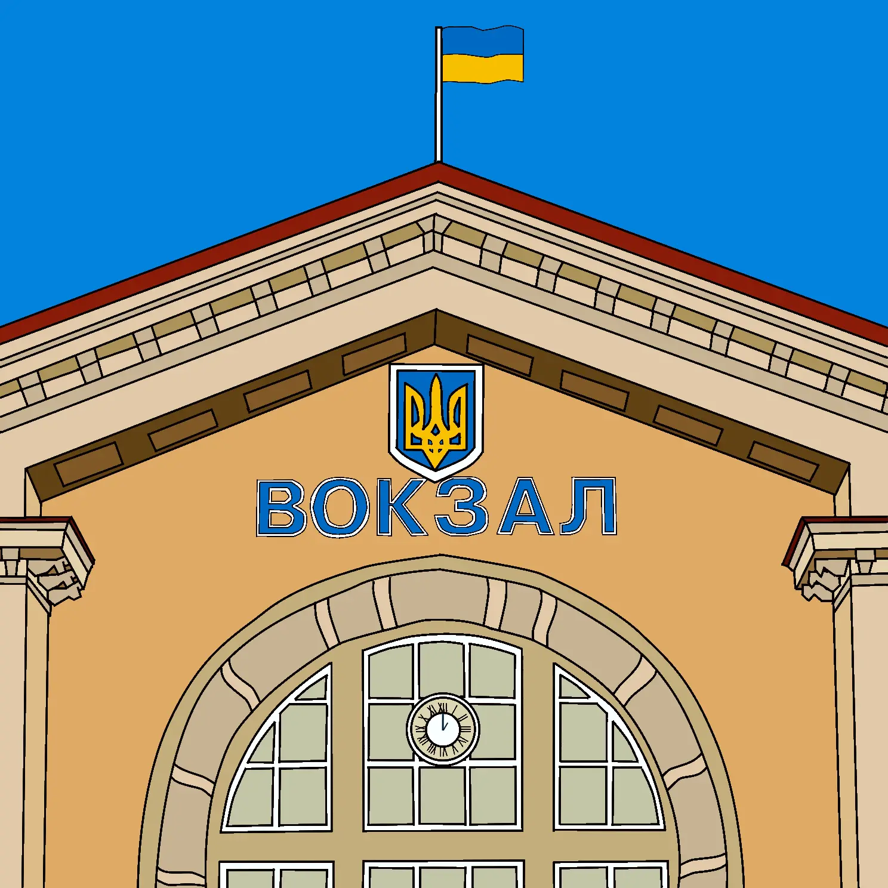

Перша згадка про вокзал у Вінниці датується 1870 роком. Саме у цей час через місто була прокладена нещодавно збудована залізнична лінія Київ — Балта — Одеса.
Перша будівля виготовлена із дерева та була схожа на церкву. Також був дзвін, який оголошував прибуття та відправлення поїздів.
Завдяки залізниці, через 40 років місто збільшилося втричі та стало першим за товарообігом в Подільській губернії. Нову будівлю вокзалу зведено наприкінці XIX століття за зразком неоготичного архітектурного стилю. Особливістю споруди став дах з так званими «щипцями» — верхньою трикутною частиною стіни, обмеженою двома схилами даху і не відокремленої знизу карнизом.
У 1940 році зведена й введена в експлуатацію двоповерхова будівля залізничного вокзалу (будівництво тривало майже 6 років). Під час німецько-радянської війни будівля вокзалу під час бойових дій була вщент зруйнована. 1952 року на її місці відновлена будівля залізничного вокзалу, яка збереглася і понині.
